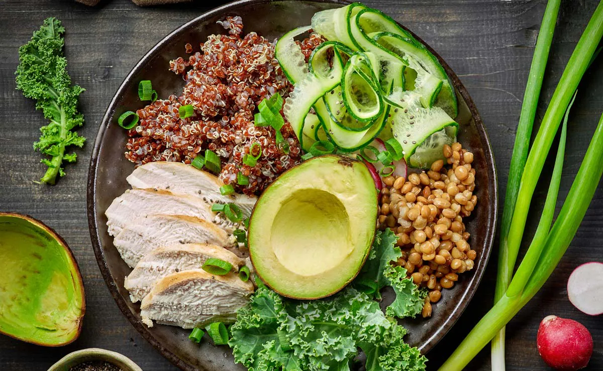
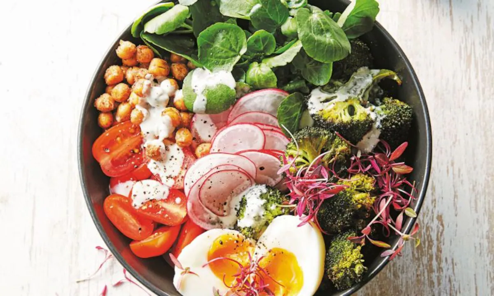
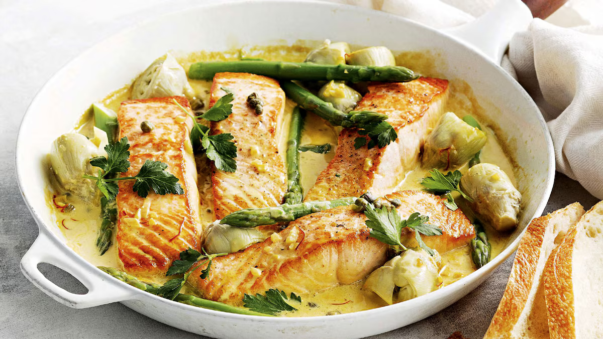
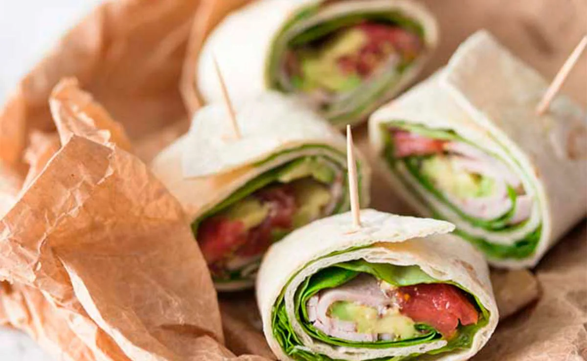
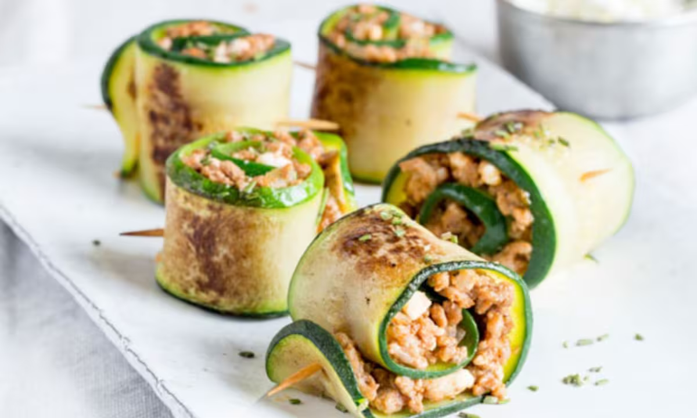
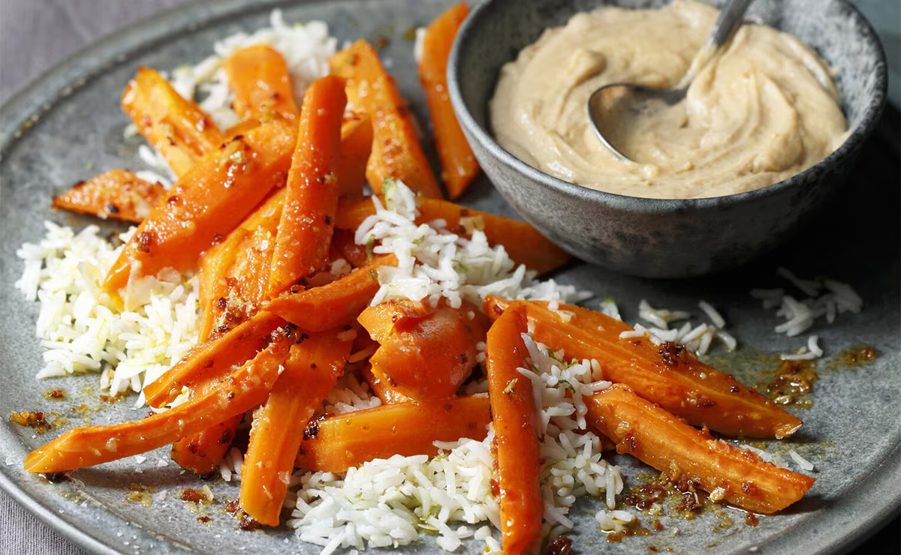

☰
Home
Perfil
Ayuda
Cerrar Sesión
Ensalada de quinoa, pollo, aguacate y lentejas

☆
Añadir a Favoritos
'Bowl' de garbanzos tostados, brócoli y salsa tahini

☆
Añadir a Favoritos
Salmón con trigueros y salsa de azafrán

☆
Añadir a Favoritos
'Wrap' de pavo y aguacate

☆
Añadir a Favoritos
'Rolls' de calabacín con carne picada

☆
Añadir a Favoritos
Arroz basmati con zanahorias asadas y salsa satay

☆
Añadir a Favoritos